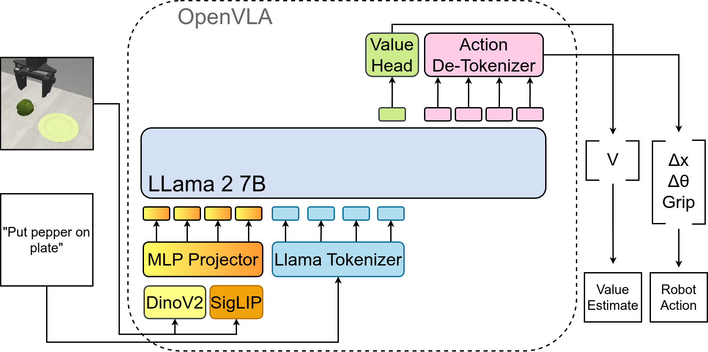
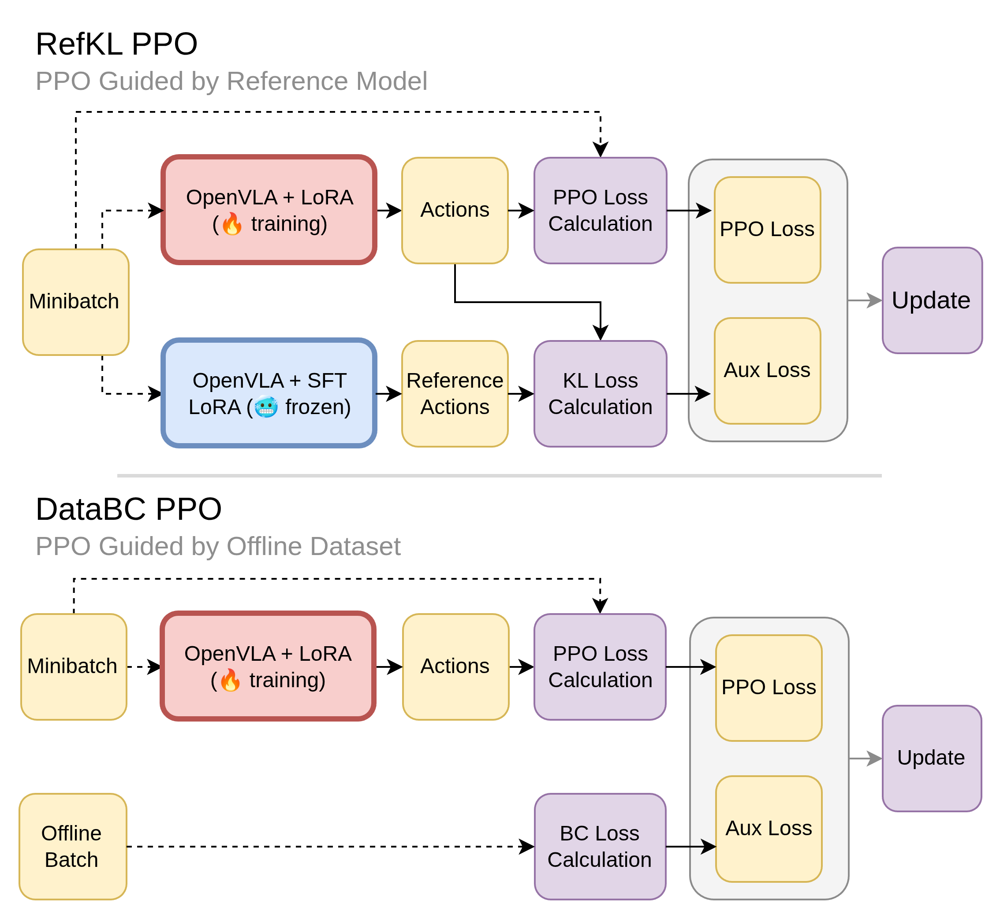
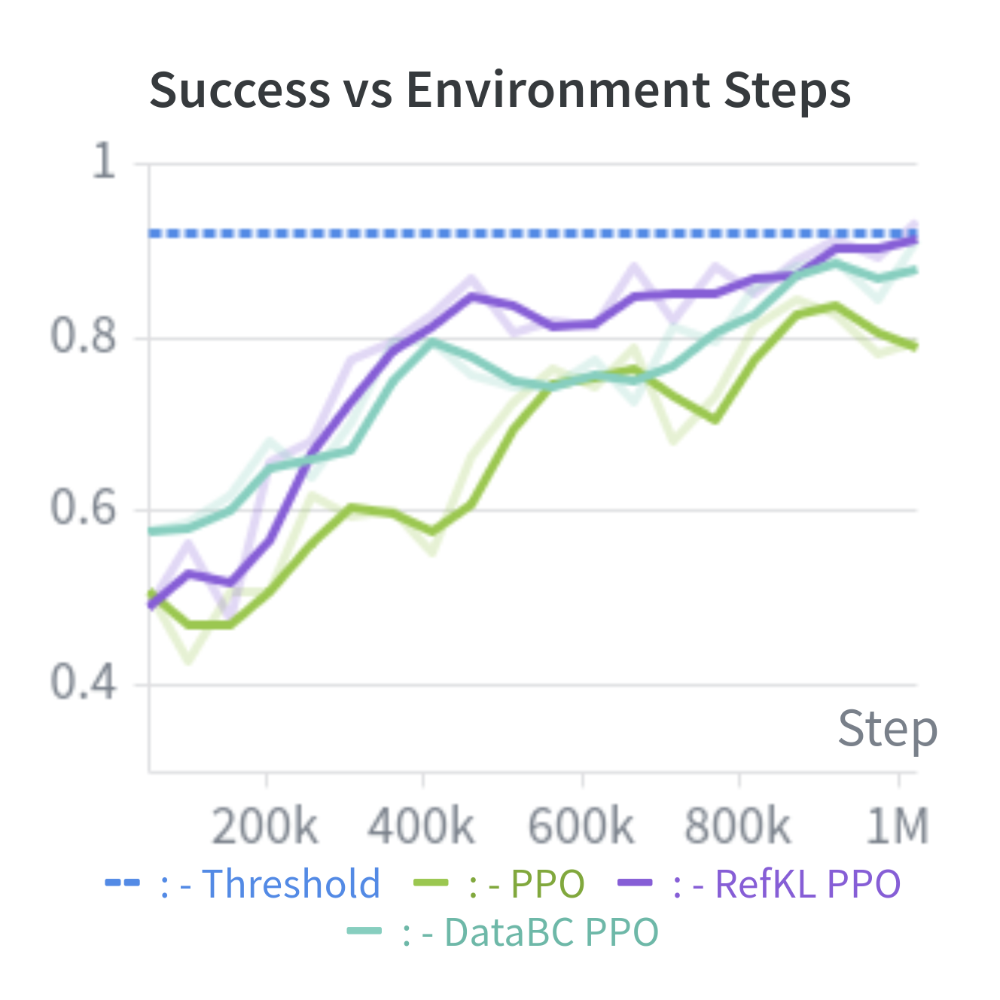
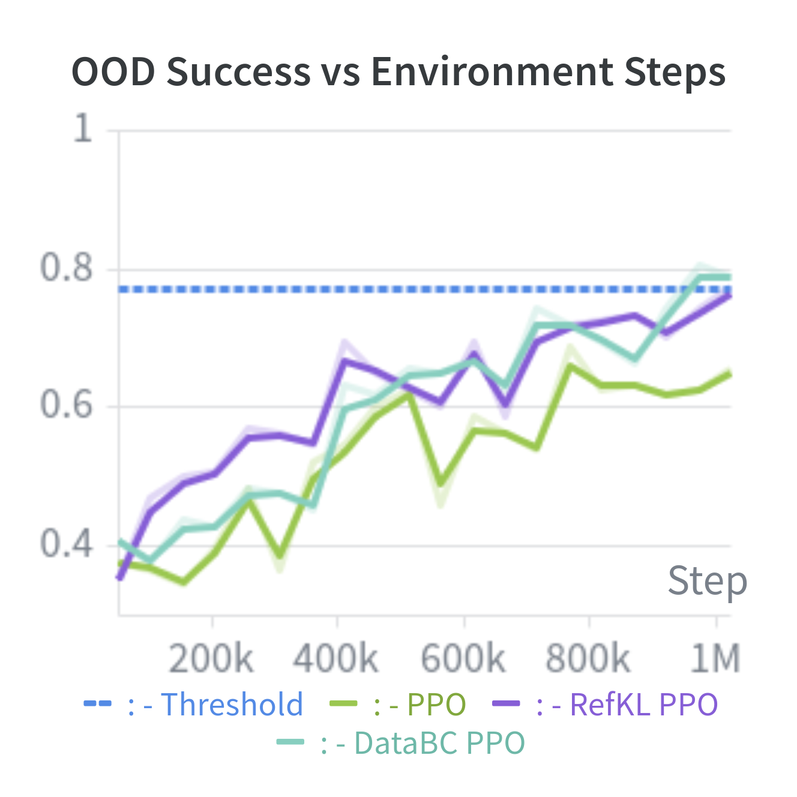

Abstract
Online reinforcement learning (RL) can substantially improve vision–language–action (VLA) policies, especially under out-of-distribution (OOD) shifts, but requires costly environment interaction. Offline supervised fine-tuning (SFT) is cheaper yet OOD-limited. We study hybrid offline–online training that regularizes PPO with offline supervision from either a frozen SFT reference policy (RefKL) or offline demonstration data (DataBC). On the RL4VLA benchmark with LoRA-based OpenVLA adaptation, guided methods preserve strong OOD capability while reaching performance close to standard RL with roughly half the online training budget. Reference-policy guidance is the most consistent variant, showing that offline supervision acts as an effective optimization prior rather than merely a better initialization.
Why Hybrid Offline-Online RL?
Vision-language-action (VLA) policies can be trained offline from fixed demonstration datasets or online through environment interaction. In practice, online RL often produces stronger final policies and better out-of-distribution (OOD) behavior, but at substantially higher cost. Offline SFT remains cheaper and easier to deploy, yet struggles under distribution shift.
Recent work on RL4VLA showed that PPO fine-tuning of OpenVLA LoRA adapters can improve OOD performance relative to SFT, but requires much more expensive online training. This raises a practical question: in parameter-efficient VLA adaptation, can offline supervision be used not only for initialization, but as a structured signal inside the RL objective?
We study two guided PPO variants and one natural baseline:
- RefKL — PPO regularized toward a frozen SFT reference policy via a KL penalty.
- DataBC — PPO augmented with behavior cloning on the offline demonstration dataset.
- PPO SFT-init — standard PPO initialized from the SFT LoRA without explicit guidance during RL.
Our central finding is that offline guidance acts as an effective optimization prior: guided methods improve over standard PPO at the same online budget, and RefKL reaches nearly the same operating point as a much longer PPO run while using far fewer environment interactions, without sacrificing OOD capability.
Task & Setup
We model control as a partially observable Markov decision process (POMDP). At each step the agent observes an RGB image and a natural-language instruction that remains fixed within an episode. The policy predicts tokenized actions that are converted by the environment wrapper into executed robot commands.
- Horizon: fixed episode length of
T = 80steps. - Reward: sparse difference-based signal derived from task progress.
- Backbone: frozen OpenVLA-warmup with a zero-initialized LoRA adapter (rank 32).
- RL head: RL4VLA value-head modification for PPO training.
- Training env:
PutOnPlateInScene25Main-v3on the RL4VLA benchmark. - SFT reference: early-stopped checkpoint trained on 2k demonstrations for 7.5k steps.
All methods share the same architecture and RL hyperparameters; only the training objective differs. This isolates the effect of offline supervision design rather than changes to the experimental protocol.
Method
During training we keep the base VLA frozen and optimize only a LoRA module attached to the policy network. The methods below differ solely in their objectives and the data used during optimization.

OpenVLA architecture. Architecture of the OpenVLA model used in our setting, consistent with the base OpenVLA model and the RL4VLA value-head modification.
Supervised Fine-Tuning (SFT)
We first train a policy on offline demonstrations by maximizing the likelihood of expert actions. The resulting LoRA checkpoint serves either as a frozen reference policy (RefKL) or as an initialization point for PPO SFT-init.
Proximal Policy Optimization (PPO)
Standard PPO is our baseline online RL algorithm. The clipped surrogate objective optimizes the policy from on-policy rollouts while a value head estimates advantages.
where r_t(θ) = π_θ(a_t|o_t) / π_θold(a_t|o_t) is the probability ratio and Â_t is the advantage estimate.

Guided PPO pipelines. Training pipelines for PPO modifications used in our experiments: RefKL (KL to a frozen SFT reference) and DataBC (behavior cloning on offline demonstrations).
RefKL: Reference-Policy Guidance
RefKL regularizes the current policy toward a frozen SFT reference on the same RL minibatch by penalizing KL divergence. This preserves SFT action preferences while still allowing on-policy adaptation.
DataBC: Offline Dataset Guidance
DataBC augments PPO with a behavior-cloning loss on offline demonstrations sampled from the SFT dataset. This directly injects expert transitions into RL optimization.
Regularization Curriculum
Rather than keeping the auxiliary weight fixed, we use a simple curriculum that gradually removes offline guidance as training progresses:
- 0 – 100k steps: constant β0 = 0.6
- 100k – 300k steps: linear decay of β to 0
- after 300k steps: pure PPO
The same schedule is used for both RefKL and DataBC. Ablation experiments show that stronger initial guidance helps and that the curriculum outperforms a constant-β schedule.
Results
At an equal budget of 1M environment steps, both guided variants outperform plain PPO. RefKL reaches IND 0.93 and average OOD 0.77, matching the final 2M-step PPO checkpoint (IND 0.92, OOD 0.77).
| Method | Steps | IND | OOD Act | OOD Lang | OOD Vis | OOD Avg |
|---|---|---|---|---|---|---|
| SFT | — | 0.82 | 0.46 | 0.60 | 0.74 | 0.62 |
| PPO | 1M | 0.75 | 0.67 | 0.62 | 0.65 | 0.64 |
| PPO SFT-init | 1M | 0.87 | 0.51 | 0.69 | 0.78 | 0.69 |
| PPO RefKL | 1M | 0.93 | 0.79 | 0.76 | 0.76 | 0.77 |
| PPO DataBC | 1M | 0.91 | 0.74 | 0.73 | 0.74 | 0.74 |
| PPO | 2M | 0.92 | 0.82 | 0.75 | 0.76 | 0.77 |
Main benchmark results on RL4VLA. RefKL at 1M steps matches 2M-step PPO on average OOD success while using half the online interaction budget.
Comparison at Equal 1M-Step Budget
At the same online training budget, both guided variants outperform plain PPO on IND and all OOD categories. PPO initialized directly from the SFT LoRA starts from a much stronger checkpoint but improves surprisingly slowly and remains below both guided methods by 1M steps. Notably, SFT-init is relatively strong on vision and language OOD but weaker on action OOD, suggesting that fitting the supervised distribution more strongly can make execution-level adaptation under RL alone more difficult.
Beta Ablation (RefKL)
We vary the initial regularization strength β0 under the curriculum schedule and compare against a constant-β variant. Stronger auxiliary supervision consistently improves both IND and OOD success; the curriculum schedule also works better than keeping β fixed throughout training.
| β | IND | OOD Avg |
|---|---|---|
| 0.1 | 0.68 | 0.52 |
| 0.3 | 0.82 | 0.63 |
| 0.6 (curriculum) | 0.93 | 0.77 |
| 0.6 (constant) | 0.86 | 0.75 |
Training Dynamics


Training curves on RL4VLA. In-distribution and out-of-distribution success over environment steps. Dashed lines indicate final PPO performance at 2M steps. Guided variants reach higher success earlier than standard PPO; RefKL is the most consistent method.
Optimization prior: offline guidance stabilizes early RL when the on-policy signal is still weak.
RefKL vs DataBC: reference-policy KL is a smoother regularizer than fixed-dataset BC.
Curriculum on beta: strong initial guidance with decay outperforms a constant auxiliary weight.
No trade-off: faster training does not sacrifice OOD capability in this setting.
Benchmark & Evaluation
All experiments follow the RL4VLA evaluation protocol. Each checkpoint is evaluated with three evaluation seeds. We report 64 in-distribution episodes and 960 out-of-distribution episodes in total (64 episodes for each of 15 OOD environments). OOD settings are grouped into vision, language, and action shifts; reported success rates are averaged across evaluation and training seeds.

RL4VLA evaluation environments. Top: an in-distribution scene used during training. Bottom: examples of out-of-distribution scenes with vision, language, and action shifts.
Analysis & Takeaways
The main empirical result is that offline-guided RL reaches the performance of a much longer PPO run while using substantially fewer online environment interactions, consistently across both IND and OOD metrics.
Complementary signals. Offline supervision and RL are not competing alternatives in this setting. SFT knowledge stabilizes and accelerates early optimization, while RL remains essential for strong final OOD behavior.
Optimization prior. During early RL, the on-policy signal is weak and exploration is inefficient. Offline guidance provides task-relevant structure before sparse reward alone becomes informative.
RefKL > DataBC. Reference-policy KL is a smoother regularizer than fixed-dataset BC and stays more consistently above standard PPO throughout training.
Initialization is not enough. Starting from SFT helps, but explicit guidance during RL is needed for the best sample-efficiency and final performance.
Among the variants considered, RefKL with strong initial guidance and curriculum decay is the most effective and consistent formulation. It improves the viability of RL fine-tuning for large-scale VLA policies by reducing expensive online interaction while preserving the main advantages of RL over offline-only training.
BibTeX
@misc{poyarkov2026offline,
title={Leveraging Offline Supervision for Efficient and Generalizable Reinforcement Learning in Large-Scale Vision-Language-Action Models},
author={Poyarkov, Dmitriy and Staroverov, Aleksei and Panov, Aleksandr I.},
howpublished={ICML 2026 Workshop on Decision-Making from Offline Datasets to Online Adaptation: Black-Box Optimization to Reinforcement Learning},
year={2026}
}